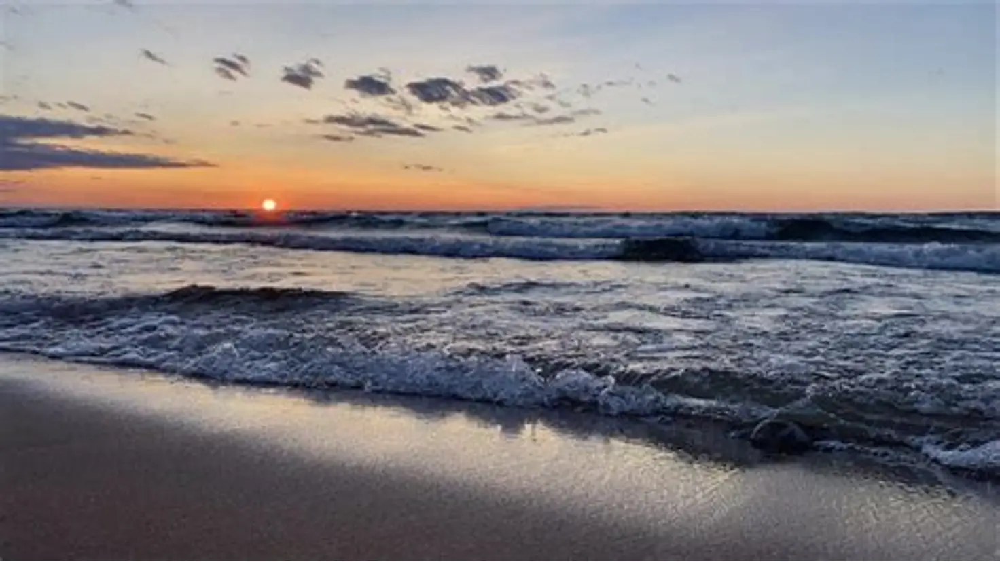
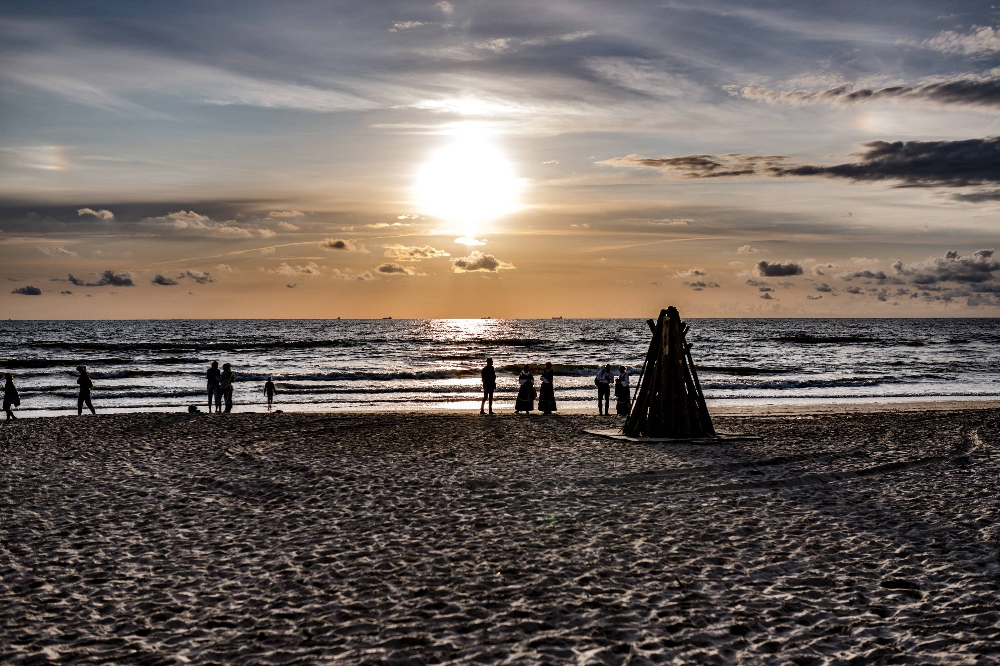
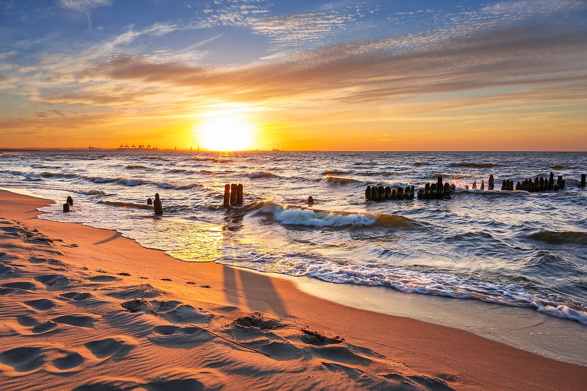

Kur takas susitinka su jūra
Atrask pajūrio miestelius, kopas ir miško takus. Pasirink kelionę pagal savo norus ir tempą.



Apie pajūrį
Lietuvos pajūris garsėja smėlio paplūdimiais, kopomis ir vaizdingais miško takais. Čia galima atrasti ramias poilsio vietas, aplankyti švyturius bei mėgautis Baltijos jūros vaizdais.